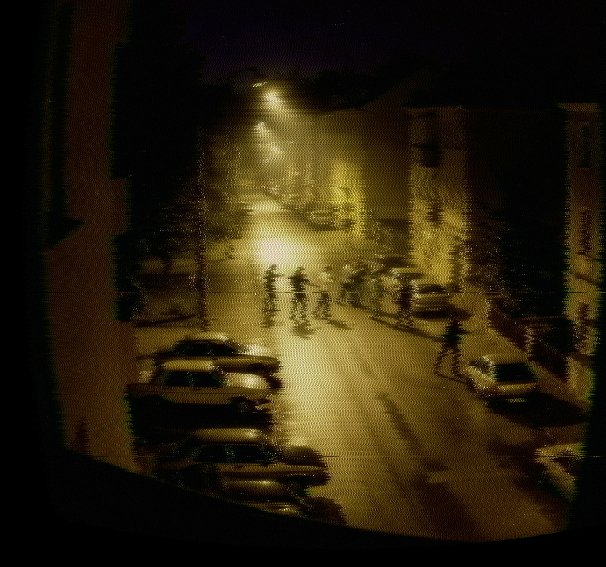
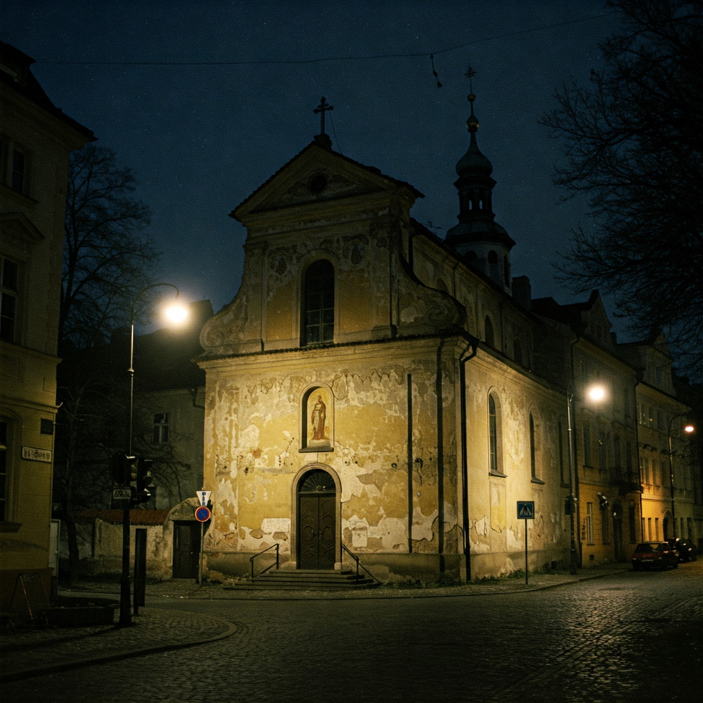

Scontro a Budejovicka
Almeno due partecipanti allo scontro identificati

Nuova svolta nelle indagini riguardanti lo scontro a fuoco avvenuto nella zona sud della città, in strada Budejovicka. Il comando di polizia, in una conferenza stampa avvenuta nella serata di ieri, ha rivelato che due delle persone coinvolte nel conflitto sono state identificate: si tratta di un cittadino di Praga di nome Jarmil Blazek, di cui non si avevano notizie da diversi mesi e per il quale la famiglia aveva denunciato regolare scomparsa, ed un cittadino inglese, con un passato nelle forze militari, sul quale gli organi competenti non hanno ancora rilasciato informazioni dettagliate, dichiarando che saranno rese note solo una volta contattato il Ministero della Difesa inglese. Ulteriori aggiornamenti sulle prossime edizioni del quotidiano.
Furto sacrilego alla Chiesa del Sacro Cuore: rubata la cassetta delle offerte
Un atto vile ha scosso la comunità della Chiesa del Sacro Cuore di Gesù: nelle prime ore del 5 gennaio, ignoti hanno trafugato la cassetta delle offerte, contenente le donazioni dei fedeli. Il furto, avvenuto in un momento di quiete, ha destato profondo sconcerto tra i parrocchiani che hanno appreso la notizia da Padre Jonas, il parroco assegnato dalla Diocesi alla struttura. Secondo le prime ricostruzioni, i ladri sono entrati nella chiesa forzando una porta laterale, approfittando dell'assenza di sorveglianza notturna. Una volta all'interno, si sono diretti verso la cassetta delle offerte, asportandola con rapidità.
Il bottino, seppur di valore economico limitato, rappresenta un gesto di profonda irriverenza e offesa verso la comunità religiosa. Il parroco, ferito durante il furto, ha lanciato un appello alla comunità, invitando chiunque abbia informazioni utili a farsi avanti e collaborare con le autorità. "Questo gesto ci addolora profondamente", ha dichiarato, "ma confidiamo nella giustizia e nella solidarietà dei nostri concittadini". Il furto della cassetta delle offerte non è solo un atto di criminalità, ma un'offesa alla fede e alla generosità dei fedeli. La comunità del Sacro Cuore di Gesù si stringe in preghiera, nella speranza che i responsabili vengano presto individuati e che la giustizia faccia il suo corso.

Ondata di furti d'auto a Praga: la polizia intensifica i controlli
Cresce la preoccupazione tra i cittadini di Praga a causa di una serie di furti d'auto che hanno colpito la città nell'ultima settimana. La polizia locale ha confermato un aumento significativo delle denunce, con modelli di auto di diverse marche che sono stati presi di mira dai ladri. "Stiamo lavorando a pieno ritmo per identificare e catturare i responsabili di questi crimini", ha dichiarato il portavoce della polizia, "e abbiamo intensificato i controlli in tutta la città, in particolare nelle zone più a rischio". Le zone più colpite sembrano essere i quartieri periferici, dove i veicoli vengono spesso parcheggiati in aree meno illuminate e sorvegliate. Tuttavia, non sono mancati casi di furti anche in pieno centro. In un recente sviluppo, la polizia ha annunciato il ritrovamento di un'auto rubata in una via in piena Stare Mesto, diversi chilometri dall'area della denuncia. Il veicolo, un modello familiare e piuttosto comune, in base alla denuncia era stato rubato solo poche ore prima e sembrava essere in perfette condizioni.